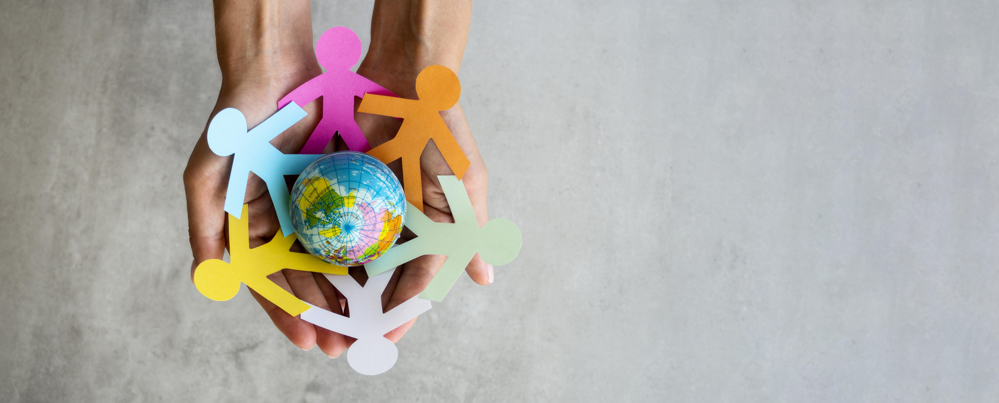
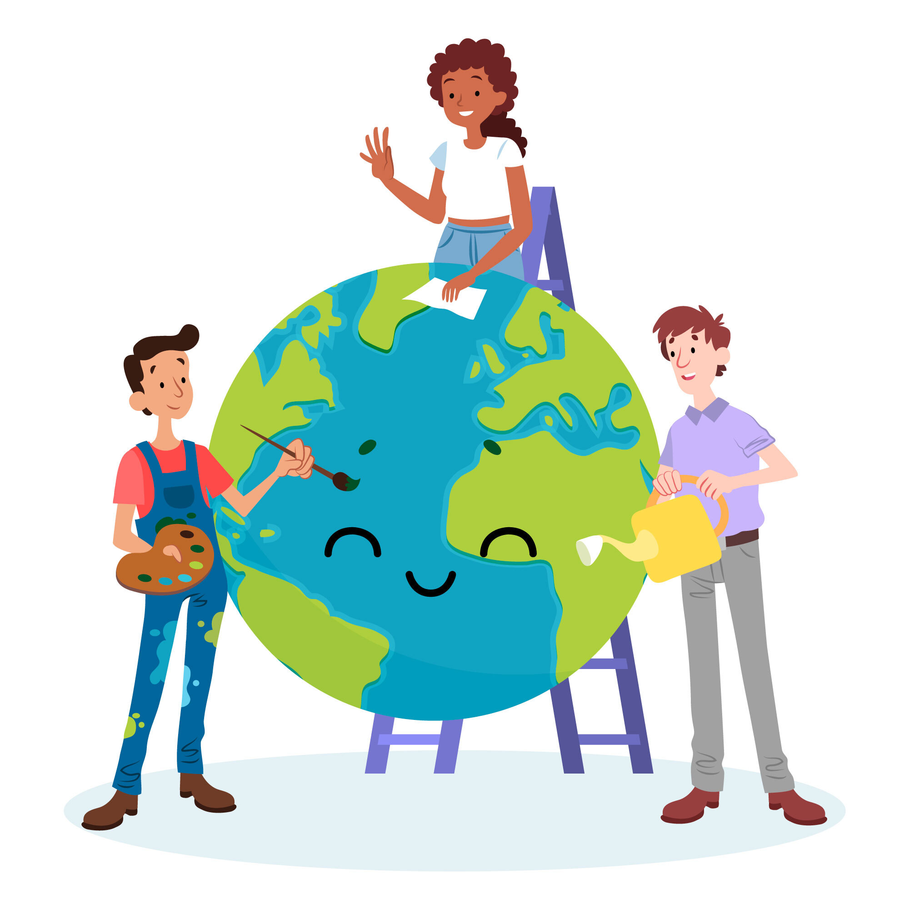

Em 2015, a Organização das Nações Unidas desenvolveu uma série de objetivos globais (ODS) para tornar o mundo mais justo, sustentável e livre de desigualdades.
A iniciativa, chamada de Pacto Global, envolve todos os 193 países-membros da ONU para que as mudanças alcancem todas as pessoas possíveis.
Foram definidos 17 Objetivos para o Desenvolvimento Sustentável, ao passo que cada um deles conta com metas específicas a serem cumpridas até 2030. O ODS 4, inclusive, diz respeito à educação inclusiva e de qualidade.
A ideia é de assegurar oportunidades iguais de aprendizagem ao longo da vida de todos e todas. Isso inclui equidade de acesso ao ensino pré-escolar, primário, secundário, técnico profissionalizante e universitário.

O que falta para cumprir a ODS 4?
o ODS 4 não pretende apenas reduzir o percentual de analfabetismo no mundo. A ideia é de garantir oportunidades iguais de acesso à aprendizagem ao longo de toda a vida das pessoas: do nível elementar ao superior.
Conforme dados divulgados pela Unesco em 2022, apenas 1% dos estudantes mais pobres entre 25 e 29 anos conseguem completar quatro anos de graduação. A taxa vai para 20% ao considerarmos a parcela rica da sociedade.

Metas para alcançar a ODS 4
Até 2030, garantir que todos os alunos adquiram conhecimentos e habilidades necessárias para promover o desenvolvimento sustentável, inclusive, entre outros, por meio da educação para o desenvolvimento sustentável e estilos de vida sustentáveis, direitos humanos, igualdade de gênero, promoção de uma cultura de paz e não violência, cidadania global e valorização da diversidade cultural e da contribuição da cultura para o desenvolvimento sustentável;